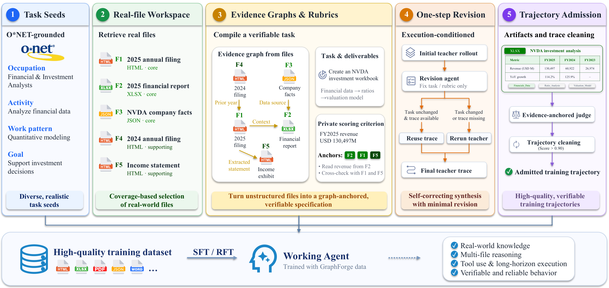

核心判断：GraphForge 先用 O*NET 工作活动控制任务分布，再从真实文件组装 workspace，并把事实、来源和跨文件依赖编码成 evidence graph；图同时约束任务说明、rubric 和验证器。这样训练出的 working agent 学到的是跨文件执行与核验，而不是只模仿答案文本。
问题与动机
通用模板容易把工作区任务压缩成泛化的‘总结/分析’，而只检查文件是否存在又无法发现表格数值、引用和结论错误。
方法框架
- 用职业活动和执行模式采样 seed，构造包含 core、supporting、confuser、ambient 文件的真实 workspace。
- 建立可追溯的 evidence graph，将文件事实、来源和解释/比较/推导依赖绑定。
- 让 agent 先执行，再按 evidence-anchored rubric 做一次修订与 artifact-level admission。
实验与核心结论
- 3,638 个 materialized tasks 中保留 2,169 条 validated trajectories。
- Qwen3.6-27B 的 GraphForge SFT 在 GDPVal OH/Codex 上较基线分别提升 65.7/63.4 Elo，在 Spreadsheet Claude/Codex 上提升 13.7/9.0 分。
- Rubric-guided RFT 的 anchored 版本更稳定改善 Workspace；unanchored 版本在 GDPVal 上更高，说明 judge 信息可改变收益分布。
GraphForge 流程

价值与边界
优点是把任务、证据和验证统一到真实文件中；局限是公开评测仍覆盖有限职业与 benchmark，judge/rubric 的质量会直接影响准入。